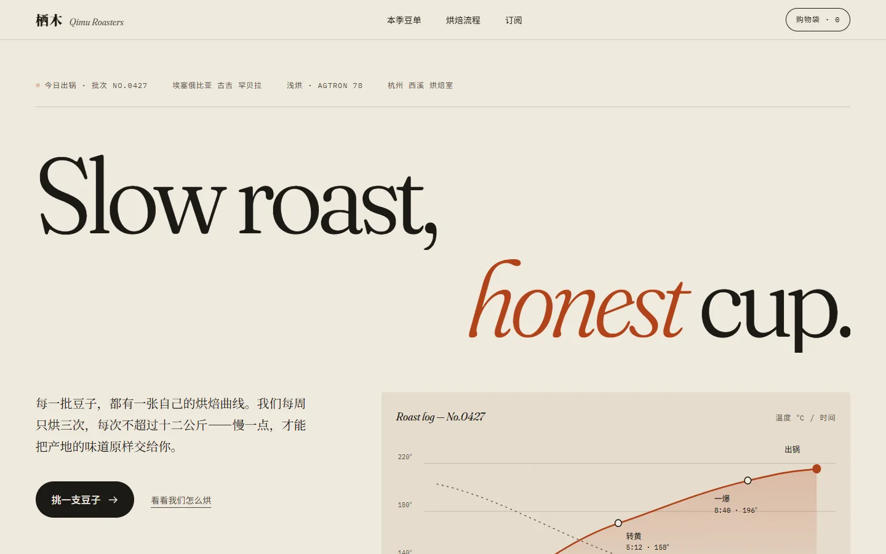
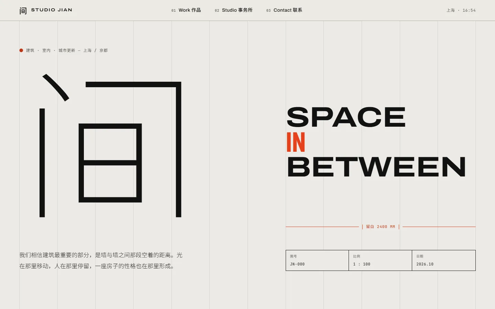
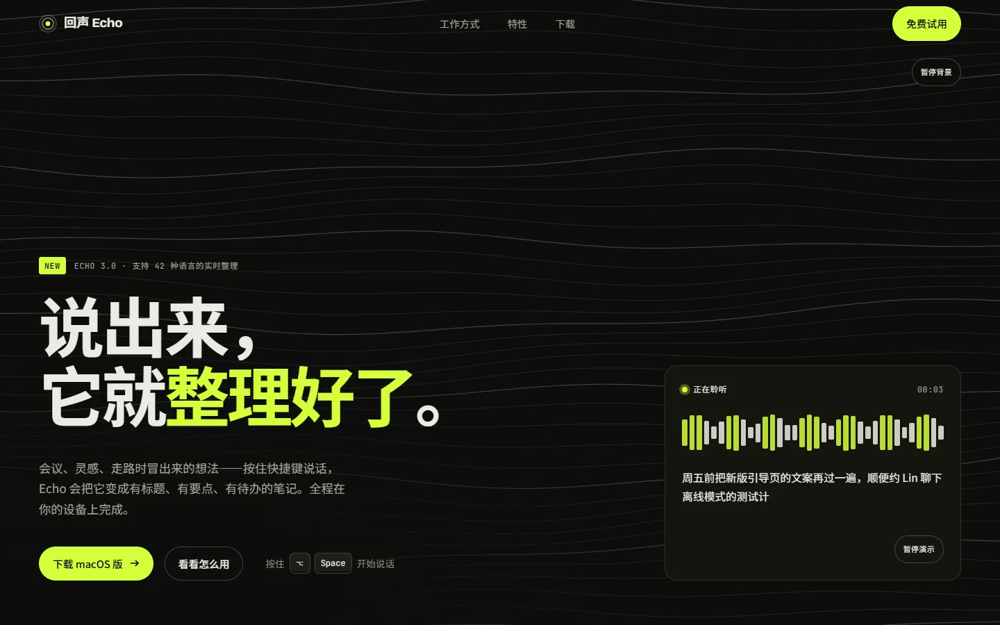

打开页面 ↗Example 01
栖木咖啡Independent coffee roaster
概念"一张烘焙记录卡"。暖纸色与 Fraunces 衬线，签名时刻是一条自动绘制、可拖动查看任意时刻温度的烘焙曲线。
查看在线页面● Agent SkillClaude Code · Codex · Cursor · 30+ 工具MIT
以 Awwwards、Webby、FWA 获奖网站为标准：先定一个设计概念，再实现，然后真正打开浏览器截图，按九个维度加权打分、修改、再截图——直到挑不出明显问题。
$ npx skills add ABC-xiaoxuan/award-level-web-design -g也可以用 Claude Code 插件市场或手动复制 安装。
评委看的是一个清晰的概念被执行到每个细节，而不是特效堆得多不多。
先写三个方向再选一个，把概念翻译成字体、色彩、版式、动效、文案和"签名时刻"，先写文案再定版式。
避开 AI 模板脸设计令牌、只动 transform/opacity、完整交互状态、AA 对比度、减弱动效偏好。
375 → 1920 四档宽度截图加眯眼图，九个维度按锚点打分、附证据，再由只看截图的独立评委复评。无红线、没有维度低于 8、加权总分 ≥ 8.5 才停。
脚本审计 + 2–3 轮设计 40% · 可用性 30% · 创意 20% · 内容 10%，权重来自 Awwwards 评审体系
三套可交互的完整示例，点开页面体验各自的设计与细节。

打开页面 ↗概念"一张烘焙记录卡"。暖纸色与 Fraunces 衬线，签名时刻是一条自动绘制、可拖动查看任意时刻温度的烘焙曲线。
查看在线页面
打开页面 ↗
打开页面 ↗左边是一次生成，右边是经过概念、审计和截图迭代后的结果。滑块用于审阅差异。
默认字体、均匀卡片、没有明确的视觉签名；移动端只是桌面版缩小。
烘焙曲线成为交互核心，类型、节奏、焦点状态和四档响应式一起被检查。
这是一个故意留下问题的小页面。点击运行 audit，直接得到可读的检查结果。
装好后不用特意调用：做落地页、官网、作品集，或者说"要高级感"时会自动启用。
支持 Claude Code、Codex、Cursor 等 30+ 工具，自动放进对应目录。
在 Claude Code 里依次输入这两行。
把 skills/award-level-web-design/ 整个文件夹复制过去。